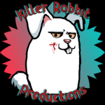
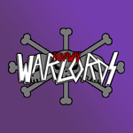

Doug's Home Page
Killer Rabbit Productions

Promotional Video
Created this intro video to use as a brand for my projects as I attend classes at NMC
Runaway Warlords

Beard Bros
Runaway Warlords is a One Piece podcast that my friends started and I participate in once in a while, we read the manga together every Sunday when it comes out and discuss it among other things. It's a lot of fun and I hope to participate in more videos this summer.
One Piece
I've been a huge fan of One Piece ever since I first watched in my parents basement on Toonami back in 2004. Soon after I discovered the manga and started reading it ever since. It's an incredible story to read and still going on and I suggest checking it out. There is an amazing community who all love it. I've met some of my closest friends through One Piece.
Picture credit to @OThatsRaspberry